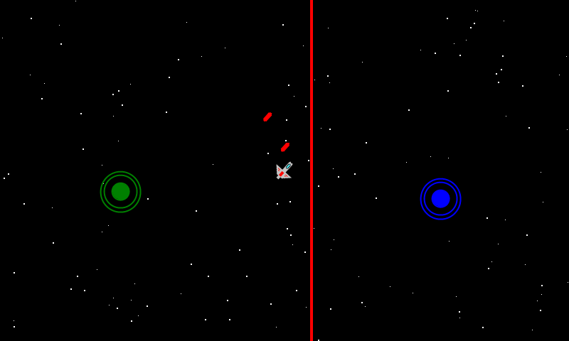

Touch Thumbsticks
Ported from Microsoft's XNA 4.0 Touch Thumbsticks sample for Windows Phone.
Source for this sample on GitHub ↗

Play ▸Opens in a new tab. The picture shows the game while both touch sticks are held. On a touch screen, drag in the left half to move and in the right half to aim and fire. With a mouse, hold and drag in either half; one mouse contact operates one stick at a time.
About this sample
Two virtual thumbsticks control a spaceship in a starfield. The left stick moves the ship; the right stick aims and fires at pursuing alien ships.
Controls
| Action | Control |
|---|---|
| Move | Touch and drag in the left half |
| Aim and fire | Touch and drag in the right half |
| Use a mouse | Hold the left button and drag in either half, one stick at a time |